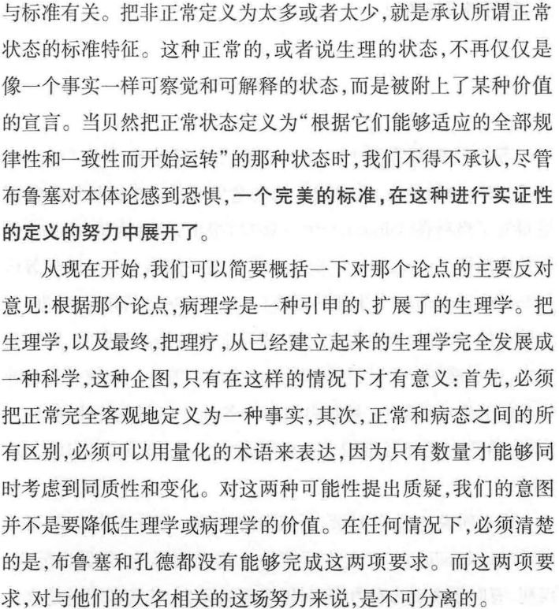
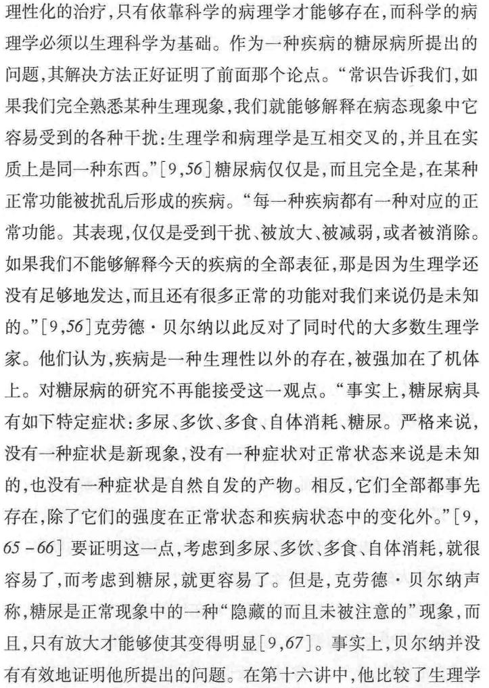
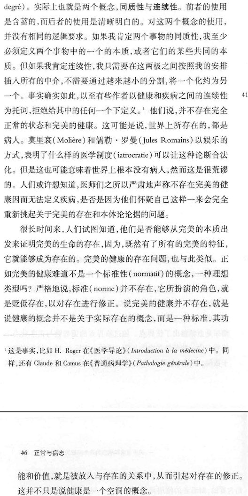
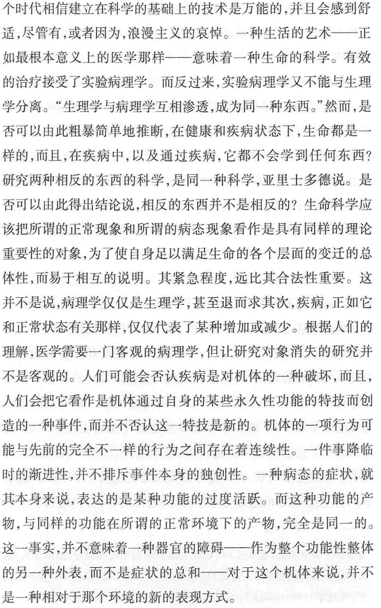

RT @nonpolar10: 在另一个意义上，我们会说，“病态”并不是“正常”的反义，不等于一种“生理的失能”，或者当我们以生理学的名义将“正常”的状态参数化，此二者并不是在每个变量上有不同的表征值那样简单。事实上，病理学同时是生理学的开端与其在给定条件下所能抵达的的稳态边界…





在另一个意义上，我们会说，“病态”并不是“正常”的反义，不等于一种“生理的失能”，或者当我们以生理学的名义将“正常”的状态参数化，此二者并不是在每个变量上有不同的表征值那样简单。事实上，病理学同时是生理学的开端与其在给定条件下所能抵达的的稳态边界，须回忆起的是，病痛的出现早于医治的努力。 https://t.co/xVerQNmMJZ https://t.co/zKYAzB91gJ